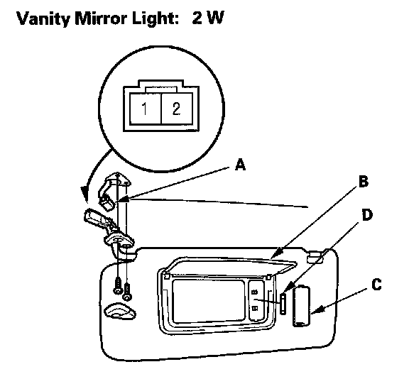

Vanity Mirror Light Test/Replacement
Vanity Mirror Light Test/Replacement1. Open the sunvisor.
2. Remove the sunvisor.

3. Disconnect the 2P connector (A) from the vanity mirror light.
4. Check for continuity between the No. 1 and No. 2 terminals.
- With the vanity mirror cover (B) opened, there should be continuity.
- With the vanity mirror cover closed, there should be no continuity.
5. If the continuity is not as specified, remove the lens (C) and replace the bulb (D) or the sunvisor.